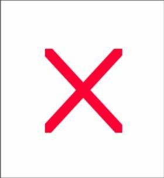

<!DOCTYPE html>
<html lang="en">
<head>
    <meta charset="UTF-8">
    <title>珠峰培训2017-14JS</title>
    <style>
        ul, li {
            list-style: none;
        }

        #news {
            width: 800px;
            padding: 20px 80px;
            background-color: #fff4f5;
            border: 1px dotted darkgoldenrod;
        }

        #news li {
            padding:0 20px;
            font-size: 26px;
            line-height: 60px;
            text-align: left;
            color: #33328b;
            cursor: pointer;
            display: inline-block;
            margin: 10px 0;
        }

        #news img {
            width: 60px;
            height: 60px;
            vertical-align: middle;
            float: right;
            margin: 10px 0;
        }

        .list0 {
            background-color: #fff8ba;
        }

        .list1 {
            background-color: #fdffb6;
        }

        a:hover {
            color: #ff3a63 !important;
        }
    </style>
</head>
<body>
<ul id="news">

</ul>
</body>
</html>
<script>
    var dataAry = ["陈小艺与神秘男再曝后续 和老公分居八年", "章子怡在《演员的诞生》上戴的项链有什么玄机", "贾静雯曾因再婚被梧桐妹称是外人 7年陪伴获称赞", "网曝王思聪豆得儿同时现身韩国 两人关系成谜", "杨幂吐槽拍戏遇不愉快事：什么玩意啊", "醉酒男嫌车挡路狂砸泄愤 醒来发现砸的是保时捷后悔了"];

    //获取需要操作的元素
    var news=document.getElementById("news");
    var list=news.getElementsByTagName("li");
    var imgList=news.getElementsByTagName("img");
    //准备一个空字符串
    var strHTML=``;
    //循环数组dataAry绑定数据,使用的是ES6模板字符串
    for(var i =0;i<dataAry.length;i++){
        strHTML+=`<li>
                    <a href="http://news.baidu.com/">${dataAry[i]}</a>
                  </li>
                  
                 `
    }
    //将拼接好的字符串赋值给news的innerHTML
    news.innerHTML=strHTML;

    //实现隔行变色
    for (var i=0;i<list.length;i++){
        list[i].className="list"+i%2;
    }

    //给所有的img绑定事件
    //当点击某一个img的时候,先弹出一个窗口,询问是否删除此条新闻,点击是就删除,点击取消不删除
    for(var i=0;i<imgList.length;i++){
        imgList[i].index=i;//将每一个img的索引使用自定义属性index存起来
        imgList[i].onclick=function () {
            //根据confirm("是否删除此条新闻?")的结果判断是否删除新闻
            if(confirm("是否删除此条新闻?")){
                //只有confirm("是否删除此条新闻?")的结果为true
                //让对应的(索引跟this是对应的)li消失,这个img也消失
                this.style.display="none";
                list[this.index].style.display="none";
            }
        }
    }
</script>